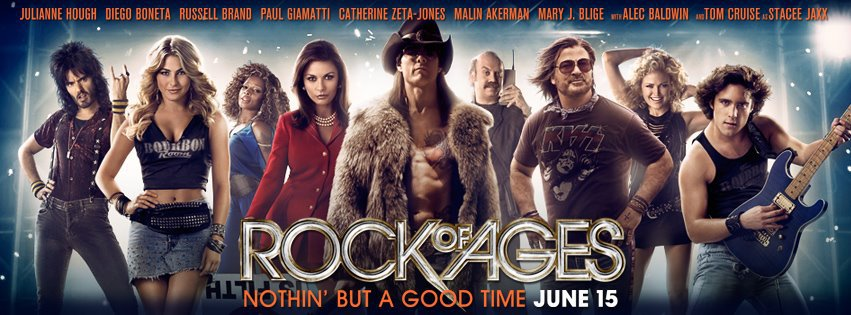

Что заставляет кровь кипеть, вызывает прилив положительных эмоции и остаётся яркими красками в памяти? Мой ответ - его величество мюзикл.
Помню было это очень давно и я на мальньком экране домашнего телевизора посмотрел "Призрак оперы" Эндрю Ллойд Уэббера (Википедия). Я ещё не знал, что это мюзикл, что его создатель - прекрасный творец в этой области искусства. Одно я понял точно - это что-то чудесное и прекрасное. То, что проникает в душу и заставляет сердце биться чаще.
Таинственный голос взывает к молодой оперной певице Кристине из мрачных недр величественной Парижской оперы. Лишь один человек в труппе знает, что невидимый покровитель и наставник Кристины, наводящий ужас на артистов, — обезображенный гений музыки, влюбленный в юную красавицу.
Призрак в маске сделает все, чтобы она стала примадонной сцены, однако у него есть властный соперник — богатый виконт Рауль де Шаньи. Став пленницей любовного треугольника, Кристина должна сделать выбор. Но страсти, что вскружили голову, свирепая ревность и безумная любовь уже вынесли возлюбленным свой немилосердный приговор.
После этого прошло много лет и на экране кинотеатра мне попался дебют Кристины Агилеры "Бурлеск", где с хорошей акустикой кинотеатра "Роликс" (г. Ижевск) я проникся глубиной её голоса и классной картинкой. Композиции из фильма также были великолепны и заряжали потрясющей энергией. Саундтрек к фильму всё ещё висит в плейлисте часто прослушеваемых.
Али — молодая амбициозная девушка из маленького городка с чудесным голосом, совсем недавно потеряла своих родителей. Теперь никому не нужная, она отправляется в большой город Лос-Анджелес, где устраивается на работу у Тесс, хозяйки ночного клуба «Бурлеск». За короткое время она находит друзей, поклонников и любовь всей своей жизни. Но может ли сказка длиться вечно? Ведь немало людей завидует этой прекрасной танцовщице.
Прошло несколько лет, я закончил университет и перебрался жить в славный город Петербург. И по интересной случайности я не сразу попал тут на мюзикл, нет. Опять же было кино - на этот раз душу затронул "Рок на века" с Томом Крузом. Настолько сильно заряженный эмоциями фильм, что я сходил на него не один раз (два :) ) и уж точно несколько раз посмотрел дома с хорошей картинкой и оригинальным саундтреком. После этого в развал iTunes были найдены как саундтрек к фильму, так и запись бродвейского одноимённого мюзикла, по которому был сделан фильм. Есть мечта съездить в Нью-Йорк, поселиться в одной из тихих гостиниц и погрузиться с головой в театральное действо: вот такой примерный план.
Девушка из маленького города приезжает в Голливуд, чтобы покорить его музыкальную сцену, но вопреки мечтам оказывается раздавленной безжалостной Фабрикой Грез. Но на нее обращает внимание экс-звезда рок-сцены Стэйси Джеккс, а сама девушка, хоть и устраивается работать в стрипклуб, обретает настоящую любовь.
И вот настал тот знаменательный день, когда мы посетили "Бал вампиров" Романа Полански. Просветление и понимание того факта, что только настоящая сцена может вместить в себя концентрированное шоу, превосходное исполнение и глубокие переживания с главными героями. Всем, кто хочет понять, что такое настоящий мюзикл - советую приехать к нам в Питер и почтить это шоу своим вниманием. Ближайшие постановки будут с 26 апреля по 8 мая - вполне можно успеть. Билеты покупать тут, самолёты и гостиницу можно забронировать на любимой Воянге.
Профессор Абронзиус и его неопытный ассистент Альфред отправляются в Трансильванию, их цель- охота на вампиров. В заснеженных Карпатах, на постоялом дворе, где они остановились, Альфред знакомится с дочерью хозяина — прекрасной Сарой. Это знакомство было недолгим: коварный вампир похитил рыжеволосую красавицу и унес ее в свой мрачный замок в горах. Профессор и Альфред нашли прибежище нечисти. Удастся ли им перехитрить кровососов и спасти Сару, пока она сама не превратится в вампиршу?
http://www.kinopoisk.ru/film/11622/ - так как мюзикл был поставлен по фильму, то описания схожи
Небольшая пиратская запись:
Совсем недавно я сделал подарок себе на 26-летие - поездка в Москву на постановку Диснеевской "Русалочки" (как бы забавно это не казалось). Очень качественная постановка, да и игра актёров на высоте, а голоса порадовали очень и очень. Хочу больше постановок такого уровня в России. Жаль, что в iTunes удалось купить только американскую версию мюзикла. Сюжет, думаю, всем известен и нет смысла повторяться.
Пару дней назад посетили также мюзикл на малой сцене театра музыкальной комедии Санкт-Петербурга под скромным именем "Снова и снова с тобой" (Афиша.ру) Бернарда Слейда. Насколько я понял, мюзикл является классическим образцом жанра 60х годов - ещё не так много спецэффектов и смен декораций, основной упор на прекрасную игру актёров, замечательное исполнение музыкальной партии и, конечно, танцы.
В оригинале Same Time, Next Year это комедия 1975 года от Бернарда Слейда. Постановка сфокусирована на двух людях, каждый из которых имеет свою семью, детей, жён и мужей.Они устраивают адюльтер на выходные друг с другом в одно и то же время в одной и той же гостинице раз в год на протяжении 24 лет.
В ближайших планах поездка в Москву на зонг оперу TODD при участии группы "Король и Шут". Надеюсь на новую порцию эмоций и впечатлений. В основе проекта лежит американский мюзикл про Суинни Тодда - демона-парикмахера с Флит-Стрит (почему то я забыл упомянуть этот шедевр). Посмотрим как выйдет передать настроение Англии того времени театральной труппе под музыку в стиле панк-рок.
А что смотрели вы? Посоветуйте новое и интересное.